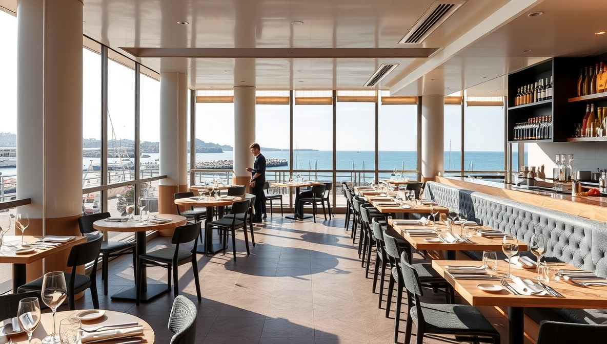

Mar de Sabores
Nuestro concepto innovador en Barcelona fusiona la tradición mediterránea con técnicas vanguardistas. El chef Jordi Martí, con estrella Michelin, dirige una cocina abierta donde los comensales pueden ver el arte culinario en acción. Diseño minimalista con toques náuticos y terraza con vistas al mar.
Filosofía Culinaria
"Del mar a la mesa en 24 horas" es nuestro lema. Trabajamos directamente con pescadores locales para garantizar la máxima frescura. Menú degustación que cambia semanalmente según las capturas del día. Destacan nuestras creaciones como el tartar de atún rojo con aguacate y wasabi, o el arroz meloso de bogavante.
Eventos Especiales
Cada primer jueves de mes organizamos "Noche de Maridajes", donde nuestro sumiller empareja cinco platos con vinos seleccionados. También ofrecemos talleres mensuales de cocina mediterránea moderna y cenas privadas en nuestra sala VIP con capacidad para 12 personas y vista directa a la cocina.
Horario y Reservas
Abierto de martes a domingo de 13:00 a 16:00 y de 20:00 a 23:30. Recomendamos reservar con al menos 48 horas de antelación, especialmente para la terraza. Disponemos de menú vegetariano y opciones para alergias alimentarias (consultar con antelación).